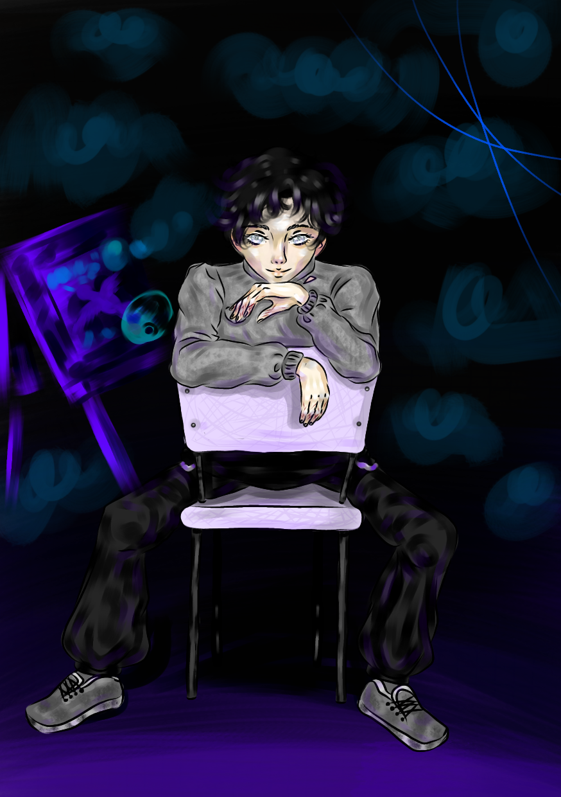

<- Повернутися на головну сторінку
Кей Морвен

Головна інформація
| Імена |
Кей Морвен |
| Зовнішність |
Коротке чорне волосся, світло-сірі очі, виснажене обличчя, шрами на пальцях (цитата) |
| Діагноз |
Емоційно нестабільний розлад особистості |
| Друзі |
Хіна Амано |
| Союзники |
|
| Перша поява |
Пролог |
У сюжеті:
Рано вранці, коли пацієнтів зібрали в актовсу залу для проведення Соборища, звернув увагу на Хіну Амано, що стала тридцятою "учасницею" для майбутніх подій. Під час сніданку дівчина підсілася до головного героя та зав'язала розмову. Коли Кей знову мав провести час наодинці з собою, то дістав свій тоненький блокнот для нотаток та скетців, і захопився зображенням очей Хіни. Коли настала обідня година, його не випустили у їдальню, натомість залишили на підлозі тарілку з супом. Минали години, а жодного звуку за дверима не пролунало... Коли лягали сутінки, медбрат крикнув Кею через відчинені двері, що вечері не буде. Кей, розізлившись, спробував вибігти, але чоловік вдарив його та залишив у палаті. Вранці хлопця насильно зав'язали у смиренну сорочку та потягли на оголошення в актову залу. ...
Cім'я:
Відносини з окремими персонажами:
Цікаві факти:
1) Улюблена картина Кея - "Крик", пензля Едварда Мунка.
Галерея